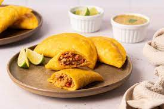

Empanada

Descripcion
¿ Sabes cómo hacer unas empanadas venezolanas de pollo y queso? La elaboración de empanadas en Venezuela forma parte de su cultura gastronómica más arraigada, rivalizando con sus famosas arepas
En Venezuela, según la región o la zona, existen variaciones en su elaboración, principalmente en los rellenos. Las empanadas de pabellón criollo, populares en Caracas, las de pollo y queso de Puerto Cabelo, en el estado de Carabobo, las de queso guayanés, de guiso de pollo o carne y curry, en Puerto Ordaz, o las empanadas de frutos del mar en la Isla Margarita, son ejemplos de la gran variedad que existe.
Las empanadas venezolanas están elaboradas a base de harina de maíz precocido, blanca o amarilla. Podemos emplear harina blanca y añadirle onoto, o lo que es lo mismo, achiote mexicano, que aportará color y sabor a la masa. Si no tenemos onoto, podemos sustituirlo por cúrcuma. La elaboración puede ser también de dos maneras, fritas en abundante aceite o preparadas en el horno.
Ingredientes
- Para la masa de las empanadas: 2 ½ tazas de agua
- 2 tazas de harina de maíz precocida
- 1 cdita. de cúrcuma (opcional)
- 1 cdita. de sal
- 1 cdita. de azúcar integral
- Para el relleno: 300 g. pechuga de pollo
- 1 puerro
- 1 litro de caldo de pollo
- 120 g. queso
- 100 g. pimiento rojo
- 100 g. cebolla
- Aceite de oliva virgen extra
- Sal (al gusto de cada casa)
- Aceite de girasol o aceite de oliva suave para freír
Pasos
- En un bol mezclamos los ingredientes secos para la elaboración de la masa, la harina de maíz precocida, azúcar, sal y cúrcuma.
- Incorporamos el agua poco a poco, removiendo la mezcla a medida que la vamos incorporando.
- Cuando toda el agua esté añadida, pasamos a las manos y amasamos ligeramente hasta que nos quede una masa lisa, seca y uniforme.
- Formamos las porciones de lo que serán nuestras empanadas. Podemos hacerlas grandes o pequeñas. Para unas empanadas más bien grande, podemos emplear unos 125 g. de masa. Si preferimos pequeñas empanadas, con la mitad del peso sería suficiente.
- Colocamos la porción de masa, achatándola, entre plástico de cocina. Estiramos la masa con un rodillo hasta que nos quede de 2 o 3 mm de grosor. Separamos el plástico y la tenemos lista para rellenar.
- Añadimos el relleno de pollo sobre la masa ya estirada y cubrimos con el queso. Con la ayuda del plástico, doblamos la masa sobre sí misma.
- Presionamos los bordes y, con la ayuda de una taza de cocina, sellamos el borde presionando la taza contra la masa.
- Retiramos la masa, retiramos el plástico que cubre la empanada y recogemos los bordes sobrantes. Preparamos todas las empanadas antes de continuar.
- Freímos las empanadas, por ambos lados, en abundante aceite.
- Retiramos a una fuente con papel de cocina para retirar el exceso de aceite y servimos bien calientes.